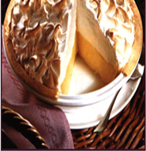

Mamas HomeMade Lemon Meringue Pie

One 9-inch pie
- 30 Min - Prep time
- 10 Min - Cook time
- 40 Min - Total
- 8 Servings
Ingredients
- 1 cup white sugar
- 2 tablespoons all-purpose flour
- 3 tablespoons cornstarch
- 1/4 teaspoon salt
- 1 1/2 cups water
- 2 lemons, juiced and zested
- 2 tablespoons butter
- 4 eggs yolks, beaten
- 1 (9-inch) pie crust, baked
- 4 egg whites
- 6 tablespoons white sugar
Directions
- Preheat Oven: Prehent oven to 350 degrees F (175 Celsius).
- Make Lemon Filling: In a medium saucepan:
- Whisk together 1 cup sugar, flour, cornstarch, and salt.
- Stir in water, lemon juice and lemon zest.
- Cook over medium-high heat, stirring frequently, until mixture comes to a boil.
- Stirr butter.
- Place egg yolks in a small bowl and gradually whisk in 1/2 cup of hot sugar mixture.
- Whisk egg yolk mixture back into remaining sugar mixture.
- Bring to a boil and continue to cook while stirring constantly until thick.
- Remove from heat.
- Pour filling into baked pastry shell.
- Make Meringue: in a large pasta bowl:
- Whip egg whites until foamy.
- Add sugar gradually and continue to whip until stiff peaks form.
- Spread meringue over pie, sealing the edges at the crust.
- Bake: Bake in preheated oven for 10 minutes, or until meringue is golden brown.

Home | Search For Other Lemon Meringue Pie Recipes | W3C XHTML 1.1 | W3C CSS
Site Designed by Cesar Velez - All Rights Reserved © 2013 Granny's Pies, Inc.